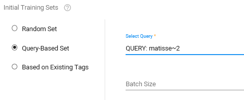

From the navigation tree, select Assisted Review.

 and then select
+ Add Project)
and then select
+ Add Project)

- Define a Project Name.
-
Select the arrow next to Select Project Search Query, click Saved Searches and select the Saved Search for the data to include in this project.

- Click Create.
- Select + Add Issue.
- Define the Issue Name and add a Description.
-
Create the Initial Training Set of the issue based on a query (the saved search(es) for potential responsive documents in the project).
 - Define the Batch Size. For example, 200 documents (depending on data and resources).
- Click Save. Repeat to add more issues.